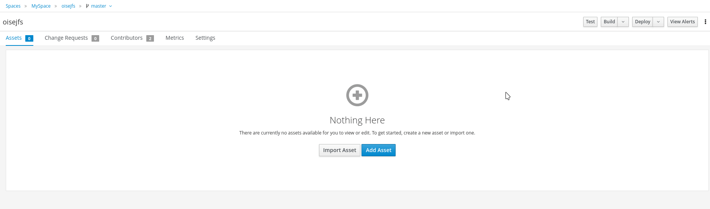
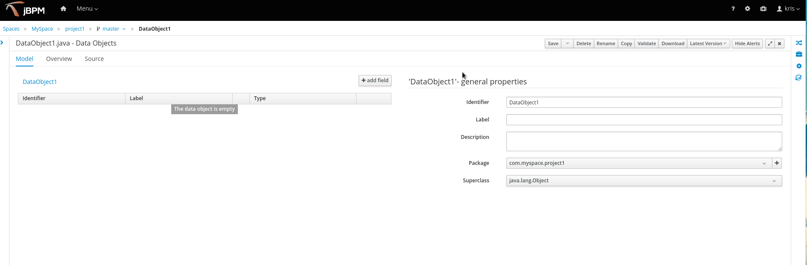
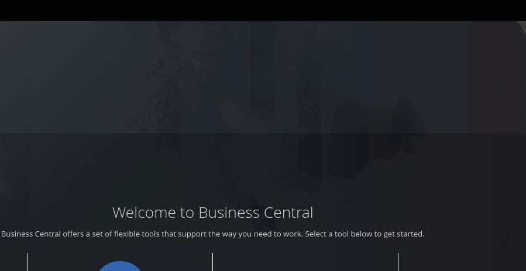

What is new on Business Central, from Foundation Team perspective — November, 2019
Recently, we pushed a lot of cool new features on Business Central added by Foundation Team. Those features will be available soon at 7.30 release[1].
This post will do a quick overview of those. I hope you guys enjoy it!

[1] As we deliver incrementally, some of these features are already released on previous versions.
High Availability on Business Central
Some weeks ago, KIE Foundation Team achieved an important milestone: Build a cloud friendly-production-ready HA infrastructure for jBPM, Drools and Optaplanner tooling (Business Central).

This journey, targeting a fail save infrastructure of Business Central, required a refactoring and redesign of some pieces of our codebase, with major changes on filesystem, index engine, distribution of events and on Business Central UI, but in the end, we are really happy with the end result, seeing Business Central running smoothly on clustered environment (especially on OpenShift).
Soon, Adriel Paredes (our engineer leading this effort) will share a detailed blog post of this new architecture. Stay tuned.
Workspace collaboration via change requests
Some release ago, we also included a cool new feature targeting business central collaboration: Change Requests support between Business Central branches.
This new workflow allows users to submit their changes for approval from one branch to another, as well as the ability to review the changes prior to the integration.
See this feature on detail on Guilherme’s post and a sneak peek on this video:
UX improvements
With the great collaboration with UX team, we are able to improve a lot of Business Central UX. Some highlights:
AF-2176 — Error messages need to be able to be copied
In the past, error messages often overrun the size of the field on the bottom of the web page. The only way to read them was hovering over the field and there was no way to copy the text of a message. We fixed this formatting the error message and also adding a copy button that copies all the errors on CSV format.

AF-2244 — UX support/guidance after new deployment
After deploying a new project, the user is now able to ‘View deployment details’ with a useful link.

AF-2151 — Modify asset Save button behavior and presentation
Instead of asking the user every time to add a comment to the file commit on the Save action, we now provide a split button with the primary (default) option being simply Save the file, with no dialog presented before saving — streamlining the dev workflow.
If the user wants to comment on the save operation, he/she can still rely on our new option “Save with comments”, that will be presented with a dialog asking for the file save the comment.

AF-2214 — User confirmation when closing the workbench with unsaved stuff
If the user had unsaved changes and closed the browser, then they would lose all changes without being warned about it. Thus, as a last resort, after this PR the browser will ask the user for confirmation when closing the tab, closing the browser or refreshing the page. (Currently, this functionality is only supported on Google Chrome).
AF-2215 — When you add or remove a field from the form, it scrolls up.
This fixes the issue that every time that you added or removed a field from the forms, it would scroll to the top. Now we keep the form at the same position after every edit.
AF-2216 If I shut down the server, the Web UI just spins and spins without an error message
After this PR, if the server is shut down, we show an appropriated pop up saying that the server is being shut down, instead of a generic error message.
AF-2177 — Add Project button should also allow importing

AF-2213 — Import project URL cleanup
If the URL has leading or trailing spaces when importing a git project, the import fails. Field validation should handle this automatically for the user.
Improvement in generic error dialogues
We added a bunch of new features in order to improve generic error dialogues in business central. See a full blog post from Rishiraj about it.

Other bug fixes and improvements:
We also fixed several bugs and did some performance improvements on Business central:
- AF-2324 Performance issues when opening assets with open Project Explorer
- JBPM-8826 — Forms — 10 Listeners get added each time a form is rendered and memory leaks appears
- AF-1768 Errors on Windows when login user account contains special character
- AF-1919: Upgrade Bootstrap to 3.4.1
- AF-2292 Remove Angular and Knockout from Business Central War
- AF-2223 Filter by asset type displaying no results
- AF-2245 Dashbuilder not closing ResultSets and Statements
- AF-2384: Cloning from remote git repo that requires credentials does not work
- AF-2125: Splitting ace and core editors from base widgets
- AF-2283: Cannot open standalone perspective in Firefox
- AF-2162: Roles permissions are not persisted and reset
- AF-2054 :Open asset is not updated for user who push the change
Thank you to everyone involved!
I would like to thank everyone involved with this release, from the awesome Foundation Team Engineers, to the lifesavers QEs and all the UX people that help us make our work look awesome!